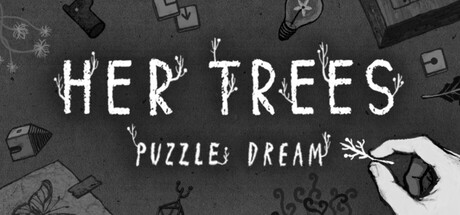
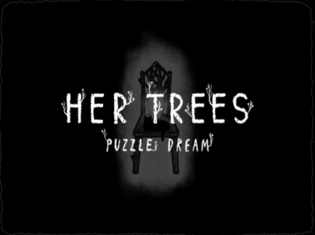
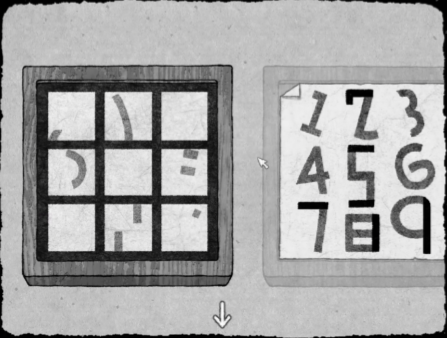

Game 1 / 3

Genres: Puzzle, Indie, Adventure, Point-and-Click
Release Date: February 10th, 2026
Platform Played: Steam
Developer: Stone
Publisher: Stone
Finished: June 12th, 2026
Playtime: 100+ Minutes
Rating: Red Heart

Can you solve the puzzles that lie within one girl's dreams?
"Her Trees: Puzzle Dream" is a short and sweet puzzle game with a surprising amount of charm found in its art style, coziness, and linear progression.
I picked up this game on a whim due to its cheap price and short completion time and it was pretty amazing.
The game's artstyle was one that was hand-drawn, which I am absolutely a sucker for, as seen with my love of games like "Cuphead." It was a little unsettling with its monochromatic colors, paired with the mildly unsettling ambience, but it catered to my recent history of drawing characters without filling in their colors. Although, there's definitely an eerie feeling about progressing through the game and watching the environment slowly fall apart.
I consider myself decent at puzzles, but like most puzzle games, I found myself stumped. I really appreciated the hint system in this game in particular, since instead of revealing the answers in one go, you are given a whole set of hints that let you decide how much of a hint you want. This really makes it stand apart for me in comparison to games like "A Little to the Left."

My favorite puzzle was the one seen above. A puzzle involving draggable numbers and a grid with some odd choices of markings. When I eventually realized the answer consisted of forming letters using these numbers and the numbers themselves indicating the order to select them for the answer, I was astounded by the creativity in this particular puzzle alone.
All in all, an indie game full of charm and intrigue as to what's coming next, encapsulated in a puzzle game that's cleverness really shows.